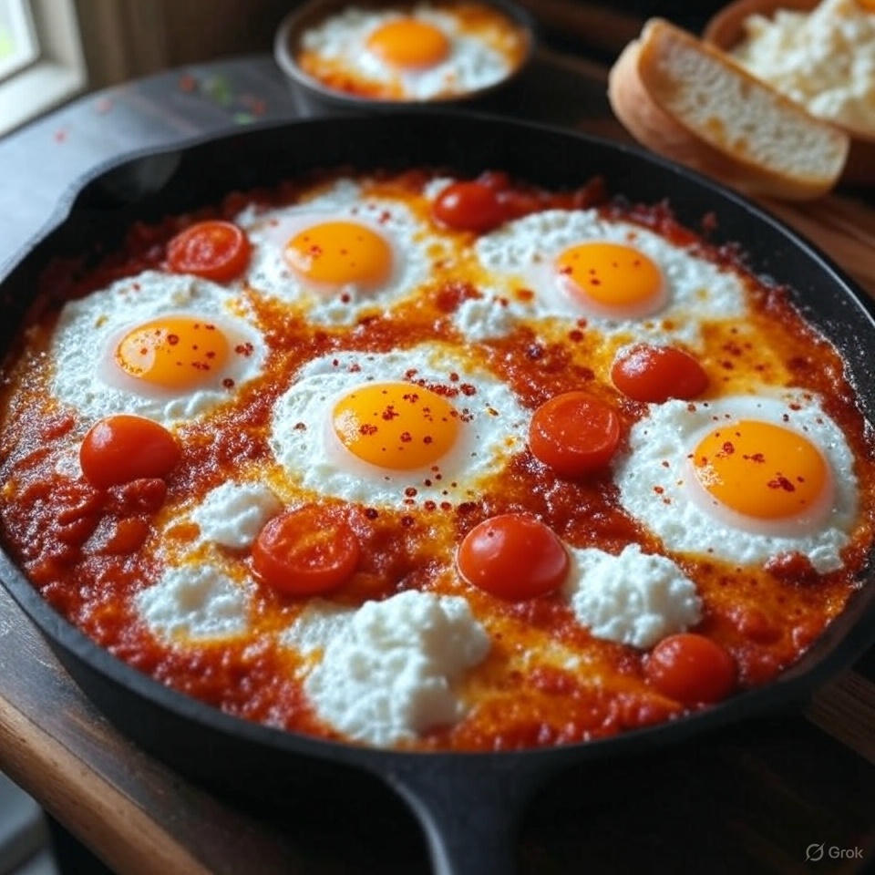

Home
Shakshuka

Description
A simple and delicious shakshuka featuring eggs cooked over easy/medium in a skillet with sweet cherry tomatoes and a dollop of low-fat cottage cheese. Enhanced with optional pepper and red pepper flakes, this dish is perfect for dipping bread to scoop up the flavorful egg, cheese, and tomato mixture.
Ingredients
- 3 eggs
- Sweet cherry tomatoes (about 1 cup)
- Low-fat cottage cheese (to taste)
- Pepper (to taste, optional)
- Red pepper flakes (to taste, optional)
- Bread (for dipping)
Steps
- Heat a skillet over low heat. Add the sweet cherry tomatoes and mash them gently with a spoon or spatula until they release their juices and form a saucy base, cooking for about 5-7 minutes.
- Create small wells in the tomato mixture and crack the 3 eggs into the wells. Cook the eggs over medium heat until they reach an over easy/medium consistency (about 3-5 minutes), covering the skillet to help the eggs set.
- Dollop low-fat cottage cheese into the skillet, distributing it around the eggs.
- Season with pepper and red pepper flakes to taste, if desired.
- Serve hot, dipping bread into the skillet to scoop up the egg, cheese, and tomato mixture.